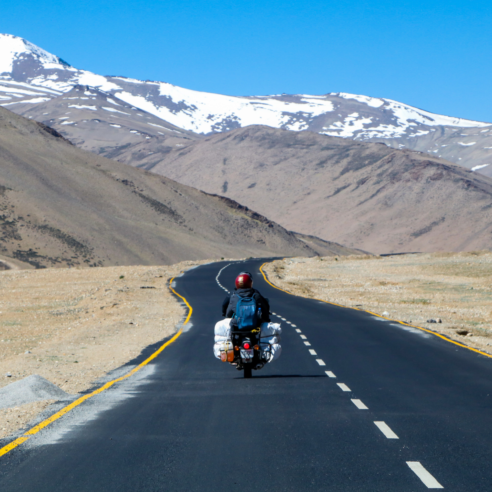

10 BEST PLACES TO VISIT IN INDIA



Kedarnath is a town in the State of Uttarakhand in India and has gained importance because of the Kedarnath Temple. It is a Nagar panchayat in Rudraprayag district. The most remote of the four Chota Char Dham Pilgrimage sites, Kedarnath is located in the Himalayas, about 3,583 m (11,755 ft) above sea level near Chorabari Glacier, the source of the Mandakini river, and is flanked by snow-capped peaks, most prominently the Kedarnath Mountain. The nearest road head is at Gaurikund about 16 km away. The town suffered extensive destruction during June 2013 from the Flash Floods caused by torrential rains in Uttarakhand state.
Kedarnath has been a pilgrimage centre since ancient times. It is not certain who constructed the
original
Kedarnath Temple and when. A mythological account attributes the temple's construction
to the legendary
Pandava brothers mentioned in the Mahabharata. However, the
Mahabharata does not mention any place
called Kedarnath. One of the earliest references to Kedarnath occurs in the Skanda
Purana (c. 7th-8th
century), which names Kedara (Kedarnath) as the place where Lord Shiva released the
holy waters of Ganga
from his matted hair, resulting in the formation of the Ganges river.
According to the hagiographies based on Madhava's Sankshepa-Shankara-Vijaya, the 8th century
philosopher
Adi
Shankaracharya died near the Kedarnath mountains; although other hagiographies, based
on Anandagiri's
Prachina-Shankara-Vijaya, state that he died at Kanchipuram. The ruins of a
monument marking the
purported
resting place of Adi Shankaracharya are located at Kedarnath. Kedarnath was definitely a prominent
pilgrimage centre by the 12th century when it is mentioned in Kritya-kalpataru written by the
Gahadavala
minister Bhatta Lakshmidhara.
| S.No. | 1 | 2 | 3 | 4 | 5 | 6 | 7 | 8 | 9 | 10 |
|---|---|---|---|---|---|---|---|---|---|---|
| Places | Gandhi Sarovar | Phata | Sonprayag | Gaurikund Temple | Vasuki Tal Lake | Shankaracharya Samadhi | Kedarnath Helipad | Triyuginarayan Temple | Bhairav Temple | Kedarnath Temple |
Goa is a state on the southwestern coast of India within the region
known as the Konkan, and geographically separated from the Deccan
highlands by the Western Ghats.
It is surrounded by the Indian states of Maharashtra to the north and
Karnataka to the east and south,
with the Arabian Sea forming its western coast. It is India's smallest
state by area and its
fourth-smallest by population. Goa has the highest GDP per capita
among all Indian states, two
and a half times as high as the GDP per capita of the country as a whole. The Eleventh Finance
Commission of India named Goa the best-placed state because of its infrastructure, and
India’s National
Commission on Population rated it as having the best quality of life in India (based on the
commission’s
“12 Indicators”). It is the third-highest ranking among Indian states in human
development index.
Panaji is the state's capital, while Vasco da Gama is its largest
city. The historic city of Margão in
Goa still exhibits the cultural influence of the Portuguese, who first voyaged to the
subcontinent in
the early 16th century as merchants, and conquered it soon thereafter, whereupon Goa became an
overseas
territory of the Portuguese Empire, part of what was then known as Portuguese
India, and remained as
such for about 450 years, until it was annexed by India in 1961. Goa’s official
language, which
is spoken by a majority of its inhabitants, is Konkani.
Goa is visited by large numbers of international and domestic tourists each year because of its
white-sand beaches, active nightlife, places of worship, and World Heritage-listed
architecture. It also
has rich flora and fauna because it lies on the Western Ghats range, a
biodiversity hotspot.
The history of Goa dates back to prehistoric times, though the
present-day state of Goa was only
established as recently as 1987. In spite of being India's smallest state by area,
Goa's history is
both long and diverse. It shares a lot of similarities with Indian history, especially
with regard to
colonial influences and a multi-cultural aesthetic.
The Usgalimal rock engravings, belonging to the upper paleolithic or
mesolithic periods, exhibit some of
the earliest traces of human settlement in India. The Mauryan and
Satavahana Empires ruled modern-day
Goa during the Iron Age.
During the medieval period, Goa was ruled by the Kadamba kingdom, Vijayanagara Empire, Bahmani
Sultanate
and Bijapur Sultanate.
The Portuguese invaded Goa in 1510, defeating the Bijapur Sultanate.
The Portuguese rule lasted for
about 450 years, and heavily influenced Goan culture, cuisine, and architecture.
In 1961, the Indian Army invaded and annexed Goa after a 36 hour battle. The region
was incorporated as
a union territory of Goa, Daman and Diu. In 1987, Goa was granted statehood. Goa
has one of the highest
GDP per capita and Human Development Index among Indian states.
| S.No. | 1 | 2 | 3 | 4 | 5 | 6 | 7 | 8 | 9 | 10 |
|---|---|---|---|---|---|---|---|---|---|---|
| Places | Mangeshi Temple | Fontainhas | Ries Mango Fort | Church Of Our Lady Of Hope | St. Alex Church | The Saturday Night Market | Cakangute Beach | Baga Beach | Candolim Beach | Church Of Our Lady Of The Immaculate Conception |
Jaipur is the capital and the largest
city of the Indian state of Rajasthan. As of 2011, the city had a
population of 3.1 million, making it
the tenth most populous city in the country. Jaipur is also known as the Pink City, due
to the dominant
color scheme of its buildings. It is located 268 km (167 miles) from the national capital New
Delhi.
Jaipur was founded in 1727 by the Kacchawa Rajput ruler Jai Singh II,
the ruler of Amer, after
whom the city is named. It was one of the earliest planned cities of modern India, designed by
Vidyadhar
Bhattacharya. During the British Colonial period, the city served as the capital of
Jaipur State.
After independence in 1947, Jaipur was made the capital of the newly formed state of
Rajasthan.
Jaipur is a popular tourist destination in India and forms a part of the west
Golden Triangle tourist
circuit along with Delhi and Agra (240 km, 149 mi). It also serves as
a gateway to other tourist
destinations in Rajasthan such as Jodhpur (348 km, 216 mi),
Jaisalmer (571 km, 355 mi), Udaipur (421 km,
262 mi), Kota (252 km, 156 mi) and Mount Abu (520 km, 323 mi). Jaipur
is located 616 km from Shimla.
On 6 July 2019, UNESCO World Heritage Committee inscribed Jaipur the "Pink City of
India" among its
World Heritage Sites. The city is also home to the UNESCO World Heritage Sites
Amer Fort and Jantar
Mantar.
The city of Jaipur was founded by King of Amer, Maharaja Sawai Jai Singh II on 18
November 1727, who
ruled from 1699 to 1743. He planned to shift his capital from Amer, 11 kilometres (7 mi) to Jaipur to
accommodate the growing population and increasing scarcity of water. Jai Singh consulted several
books on architecture and architects while planning the layout of Jaipur. Under the architectural
guidance of Vidyadhar Bhattacharya, Jaipur was planned based on the principles of
Vastu Shastra and
Shilpa Shastra. The construction of the city began in 1726 and took four years to
complete the major
roads, offices, and palaces. The city was divided into nine blocks, two of which contained the state
buildings and palaces, with the remaining seven allotted to the public. Huge ramparts were built,
pierced by seven fortified gates.
During the rule of Sawai Ram Singh I, the city was painted pink to welcome HRH
Albert Edward, Prince of
Wales (who later became King Edward VII, Emperor of India), in 1876. Many
of the avenues still
remain painted in pink, giving Jaipur a distinctive appearance and the epithet Pink city.
In the 19th century, the city grew rapidly and by 1900 it had a population of 160,000. The wide
boulevards were paved and its chief industries were the working of metals and marble,
fostered by a
school of art founded in 1868. The city had three colleges, including a Sanskrit
college (1865) and
a girls' school (1867) opened during the reign of the Maharaja Ram Singh II.
Large areas of the city including the airport were flooded in August 1981, resulting in the death of
eight people and much damage to the city's Dravyavati River. The floods were caused by
three days of
cloud burst that produced more rain than the annual average.
| S.No. | 1 | 2 | 3 | 4 | 5 | 6 | 7 | 8 | 9 | 10 |
|---|---|---|---|---|---|---|---|---|---|---|
| Places | City Palace | Jantar Mantar | Hawa Mahal | Amber Fort | Albert Hall Museum | Birla Mandir | Nahargarh fort | Galta Ji | Amrapali Museum | Museum Of Legacies |
Badrinath is a Hindu holy town and a nagar panchayat in Chamoli district in the state of Uttarakhand, India. It is one of the four sites in India's Char Dham pilgrimage and gets its name from the Badrinath Temple.
Badrinath was re-established as a major pilgrimage site by Adi Shankara in the 8th
century. In
earlier days, pilgrims used to walk hundreds of miles to visit Badrinath temple.
The temple has been repeatedly destroyed by earthquakes and avalanches. As late as the First
World War,
the town consisted only of the 20-odd huts used by the temple's staff, but the site drew thousands each
year and up to 50,000 on its duodecennial festivals (every twelve years). In recent
years its
popularity has increased still more, with an estimated 600,000 pilgrims visiting during the 2006
season, compared to 90,676 in 1961. The temple in Badrinath is also a sacred pilgrimage site for
Vaishnavites. Badrinath is also gateway to several mountaineering expeditions headed to
mountains like
Nilkantha.
| S.No. | 1 | 2 | 3 | 4 | 5 | 6 | 7 | 8 | 9 | 10 |
|---|---|---|---|---|---|---|---|---|---|---|
| Places | Pandukeshwar | Yogdhyan Badri Temple | Mana village | Tapta Kund Badrinath | Neelkantha Peak | Charan Paduka | Mata Murti Temple | Narad Kund | Bheem Pul | Ganesha Cave |
Agra is a city on the banks of the Yamuna
river in the Indian state of Uttar Pradesh, about 210 kilometres (130 mi) south of the
national capital
New Delhi. With a population of roughly 1.6 million, Agra is the fourth-most populous
city in Uttar
Pradesh and twenty-third most populous city in India.
Agra's notable historical period began during Sikandar Lodi's reign, but the golden age
of the
city
began with the Mughals. Agra was the foremost city of the Indian
subcontinent and the capital of the
Mughal Empire under Mughal emperors Babur, Humayun, Akbar,
Jahangir and Shah Jahan. Under Mughal rule,
Agra became a centre for learning, arts, commerce, and religion, and saw the construction of the
Agra
Fort, Sikandra and Agra's most prized monument, the Taj Mahal, built
by Shah Jahan as a mausoleum for
his favourite empress. With the decline of the Mughal empire in the late 18th century, the city fell
successively first to Marathas and later to the East India
Company. After Independence, Agra has
developed into an industrial town, with a booming tourism industry, along with footwear, leather and
other manufacturing. The Taj Mahal and the Agra Fort are UNESCO World Heritage
Sites. The city features
mild winters, hot and dry summers and a monsoon season, and is famous for its
Mughlai cuisine. Agra is
included on the Golden Triangle tourist circuit, along with Delhi
and Jaipur; and the Uttar Pradesh
Heritage Arc, a tourist circuit of Uttar Pradesh, along with Lucknow
and Varanasi.
Agra has two histories: one of the ancient city on the east, or left, bank of the river
Yamuna, going
back so far as to be lost in the legends of Krishna and Mahabharata
and reestablished by Sikandar Lodhi
in 1504-1505; the other of the modern city, founded by Akbar in 1558, on the right bank
of the river
which is associated with the Mughals, and known throughout the world as the city of the
Taj. Of ancient
Agra little now remains except a few traces of the foundations. It was a place of importance under
various Hindu dynasties previous to the Muslim invasions of India, but its history is
unclear, and
possess little historical interest. Agra's period of historical importance began during Sikandar
Lodi's reign. In 1504-1505, Sultan Sikandar Lodi (reigned 1489–1517), the
Afghan ruler of the Delhi
Sultanate, rebuilt Agra and made it the seat of government. Sikandar Lodhi appointed a
commission which inspected and surveyed both sides of the Yamuna from Delhi to
Etawah and finally chose
a place on the left bank, or the east side of the Yamuna, as the site for the city. Agra on the left
bank of the Yamuna grew into a large flourishing town with royal presence, officials, merchants,
scholars, theologians and artists. The city became one of the most important centres of Islamic learning
in India. The sultan founded the village of Sikandra in the northern suburbs of the
city and built there
a Baradari of red sandstone in 1495, which was converted into a tomb by Jahangir, and
now stands as the
Tomb of Mariam-uz-Zamani, Akbar's empress.
After the Sultan's death in 1517, the city passed on to his son, Sultan Ibrahim Lodi
(reigned
1517–26[16]). He ruled his sultanate from Agra until he was defeated and killed by Mughal Emperor Babur
in the First battle of Panipat, fought in 1526.
| S.No. | 1 | 2 | 3 | 4 | 5 | 6 | 7 | 8 | 9 | 10 |
|---|---|---|---|---|---|---|---|---|---|---|
| Places | Taj Mahal | Agra Fort | Itimad-Ud-Daulah's Tomb | Mehtab Bagh | Subhash Emporium | Akbar's Mausoleum | Fatehpur Sikri | Agra Bear Rescue Center | Elephant Conservation And Care Center | Agra's Old City |
Jammu and Kashmir is a region administered by India as a union
territory and consists of the southern
portion of the larger Kashmir region, which has been the subject of a dispute between
India and Pakistan
since 1947, and between India and China since 1962. The Line of Control separates Jammu
and
Kashmir from the Pakistani-administered territories of Azad Kashmir
and Gilgit-Baltistan in the west and
north. It lies to the north of the Indian states of Himachal Pradesh and
Punjab and to the west of
Ladakh, which is also subject to the dispute as a part of Kashmir, and administered by
India as a union
territory.
Provisions for the formation of the union territory of Jammu and Kashmir were contained within the
Jammu
and Kashmir Reorganisation Act, 2019, which was passed by both houses of the
Parliament of India in
August 2019. The act re-constituted the former state of Jammu and Kashmir into two
union territories,
Jammu and Kashmir and Ladakh, with effect from 31 October 2019.
The state of Jammu and Kashmir was accorded special status by Article 370 of
the Constitution of India.
In contrast to other states of India, Jammu and Kashmir had its own
constitution, flag and
administrative autonomy. Indian citizens from other states were not allowed to purchase land or
property in Jammu and Kashmir.
Jammu and Kashmir had three distinct areas: Hindu-majority Jammu region,
Muslim-majority Kashmir Valley
and Buddhist-dominated Ladakh.[25] Unrest and violence persisted in the Kashmiri Valley
and, following a
disputed state election in 1987, an insurgency persisted in protest over autonomy and
rights.
The Bharatiya Janata Party (BJP) came to power in the 2014 Indian general
election and five years later
included in their 2019 election manifesto the revocation of Article 370 of the
Constitution of India, in
order to bring Jammu and Kashmir to equal status with other states.
A resolution to repeal Article 370 was passed by both the houses of the
Parliament of India in August
2019. At the same time, a reorganisation act was also passed, which would reconstitute
the state into
two union territories, Jammu and Kashmir and Ladakh. The reorganisation took effect from 31 October
2019.
Thousands of Kashmiris, including two former Chief Ministers and hundreds of other politicians, were
detained in prisons all across India, the state was put under a lockdown and
communication and
internet services were suspended.
| S.No. | 1 | 2 | 3 | 4 | 5 | 6 | 7 | 8 | 9 | 10 |
|---|---|---|---|---|---|---|---|---|---|---|
| Places | Yusmarg | Gulmarg | Sonmarg | Pahalgam | Gurez Valley | Srinagar | Vaishno Devi | Patnitop | Doda | Kishtwar |
Ladakh is a region administered by India as a union territory, and
constitutes a part of
the larger Kashmir region, which has been the subject of dispute between India,
Pakistan, and China
since 1947. It was established on 31 October 2019, following the passage of the Jammu and
Kashmir
Reorganisation Act. Ladakh is bordered by the Autonomous Region to the
east, the Indian state of
Himachal Pradesh to the south, both the Indian-administered union territory of Jammu
and Kashmir and the
Pakistan-administered Gilgit-Baltistan to the west, and the southwest corner of
Xinjiang across the
Karakoram Pass in the far north. It extends from the Siachen Glacier
in the Karakoram range to the north
to the main Great Himalayas to the south. The eastern end, consisting of the
uninhabited Aksai
Chin plains, is claimed by the Indian Government as part of Ladakh, and has been under
Chinese control
since 1962.
In the past Ladakh gained importance from its strategic location at the crossroads of important trade
routes, but as the Chinese authorities closed the borders between Tibet Autonomous Region and Ladakh
in the 1960s, international trade dwindled. Since 1974, the Government of India has
successfully
encouraged tourism in Ladakh. As Ladakh is a part of the strategically important
Kashmir
region, the
Indian military maintains a strong presence in the region.
The largest town in Ladakh is Leh, followed by Kargil,
each of which headquarters a district. The
Leh district contains the Indus, Shyok and
Nubra river valleys. The Kargil district contains the
Suru,
Dras and Zanskar river valleys. The main populated regions are
the river valleys, but the mountain
slopes also support the pastoral Changpa nomads. The main religious groups
in the region are Muslims
(mainly Shia) (46%), Tibetan Buddhists (40%),
Hindus (12%) and others (2%). Ladakh is one of the
most sparsely populated regions in India. As its culture and history are closely related to
that of
Tibet, it is known as the "Little Tibet".
Ladakh is the largest and the second least populous union
territory of India.
Rock carvings found in many parts of Ladakh indicate that the area has been inhabited from
Neolithic
times. Ladakh's earliest inhabitants consisted of a mixed Indo-Aryan population of Mons
and
Dards, who find mention in the works of Herodotus, and classical
writers as well as the Indian
Puranas. Around the 1st century, Ladakh was a part of the Kushan
Empire. Buddhism spread into
western Ladakh from Kashmir in the 2nd century. The 7th-century Buddhist traveller Xuanzang describes
the region in his accounts. Xuanzang's term of Ladakh is Mo-lo-so, which has been
reconstructed by
academics as *Malasa, *Marāsa, or *Mrāsa, which is believed to have been the original name of the
region.
For much of the first millennium, the western Tibet comprised Zhangzhung kingdom(s),
which practised the
Bon religion. Sandwiched between Kashmir and Zhangzhung, Ladakh is believed to have
been alternatively
under the control of one or other of these powers. Academics find strong influences of Zhangzhung
language and culture in "upper Ladakh" (from the middle section of the Indus valley to the
southeast). The penultimate king of Zhangzhung is said to have been from Ladakh.
From around 660 CE, Central Tibet and China started contesting the "four garrisons" of the Tarim
Basin
(present day Xinjiang), a struggle that lasted three centuries. Zhangzhung fell victim
to Tibet's
ambitions in c. 634 and disappeared for ever. Kashmir's Karkota Empire and the
Umayyad Caliphate too
joined the contest for Xinjiang soon afterwards. Baltistan and Ladakh were at the centre of these
struggles. Academics infer from the slant of Ladakhi chronicles that Ladakh may have owed its
primary allegiance to Tibet during this time, but that it was more political than cultural. Ladakh
remained Buddhist and its culture was not yet Tibetan.
| S.No. | 1 | 2 | 3 | 4 | 5 | 6 | 7 | 8 | 9 | 10 |
|---|---|---|---|---|---|---|---|---|---|---|
| Places | Pangong Tso Lake | Thiskey | Khardung-La Pass | Markha Valley | Nubra Valley | Tso Moriri Lake | Hemis National Park | Diskit Monastery | Shanti Stupa | Royal Leh Palace |
Shimla also known as Simla, is the
capital and the largest city of the Indian state of Himachal
Pradesh. In 1864, Shimla was declared as
the summer capital of British India. After
independence, the city became the capital of Punjab and was
later made the capital of Himachal Pradesh. It is the principal commercial,
cultural and educational
centre of the state. It was the capital city in exile of British Burma (present-day
Myanmar) from 1942
to 1945.
Small hamlets were recorded prior to 1815 when British forces took control of the area. The climatic
conditions attracted the British to establish the city in the dense forests of the
Himalayas. As the
summer capital, Shimla hosted many important political meetings including the Simla Accord of
1914
and
the Simla Conference of 1945. After independence, the state of Himachal
Pradesh came into being in
1948
as a result of the integration of 28 princely states. Even after independence, the city
remained an
important political centre, hosting the Simla Agreement of 1972. After the
reorganisation of the
state
of Himachal Pradesh, the existing Mahasu district was named Shimla.
Shri Hanuman Jakhu (Statue) located in the premises of Jakhu Temple
Shimla is home to a number of buildings that are styled in the Tudorbethan and
neo-Gothic
architectures
dating from the colonial era, as well as multiple temples and churches. The colonial architecture
and
churches, the temples, and the natural environment of the city attracts tourists. Major city
centre's
attractions include the Shri Hanuman Jakhu (Statue), Jakhu Temple, Viceregal Lodge, Christ
Church,
Mall
Road, The Ridge and Annadale. The city centre's northern most point is
Jakhoo and the southern most
location is Annadale, and the easternmost point is Sanjauli and western point is
Chotta Shimla. The
Kalka–Shimla Railway line built by the British, a UNESCO World Heritage
Site, is also a major
tourist
attraction. Owing to its steep terrain, Shimla hosts the mountain biking race MTB
Himalaya, which
started in 2005 and is regarded as the biggest event of its kind in South Asia. Shimla also has the
largest natural ice skating rink in South Asia. Apart from being a tourism centre, the
city is also
an
educational hub with a number of colleges and research institutions.
Most of the area occupied by present-day Shimla city was dense forest during the 18th century. The only
civilisation was the Jakhu Temple and a few scattered houses. The area was called
'Shimla', named after a Hindu goddess, Shyamala Devi, an incarnation of
Kali.
The area of present-day Shimla was invaded and captured by Bhimsen Thapa of
Nepal in 1806. The British
East India Company took control of the territory as per the Sugauli Treaty
after the Anglo-Nepalese War
(1814–16). The Gurkha leaders were quelled by storming the fort of Malaun under the
command of David
Ochterlony in May 1815. In a diary entry dated 30 August 1817, the Gerard brothers, who
surveyed the
area, describe Shimla as "a middling-sized village where a fakir is situated to give water to the
travellers". In 1819, Lieutenant Ross, the Assistant Political Agent in the Hill
States, set up a wood
cottage in Shimla. Three years later, his successor and the Scottish civil servant
Charles Pratt Kennedy
built the first pucca house in the area named Kennedy Cottage in 1822, near
Annadale, what is now the
home for CPWD office. The accounts of the Britain-like climate started attracting several British
officers to the area during the hot Indian summers. By 1826, some officers had started spending their
entire vacation in Shimla. In 1827, William Amherst, the Governor-General of
Bengal, visited Shimla and
stayed in the Kennedy House. A year later, Stapleton Cotton, the Commander-in-Chief of
the British
forces in India, stayed at the same residence. During his stay, a three-mile road and a bridge were
constructed near Jakhoo. In 1830, the British acquired the surrounding land from the
chiefs of Keonthal
and Patiala in exchange for the Rawin pargana and a portion of the
Bharauli pargana. The settlement grew
rapidly after this, from 30 houses in 1830 to 1,141 houses in 1881.
| S.No. | 1 | 2 | 3 | 4 | 5 | 6 | 7 | 8 | 9 | 10 |
|---|---|---|---|---|---|---|---|---|---|---|
| Places | Jakhu Temple | The Mall | Kalka - Shimla Railway | Indian Institute Of Advanced Study | Viceregal Lodge | The Ridge | Annandale Ground | Green Valley | Kali Bari Temple | Jakhoo Hill |
New Delh is the capital of
India and an administrative district of the National Capital Territory of
Delhi. New Delhi is the seat
of all three branches of the government of India, hosting the Rashtrapati
Bhavan, Parliament House, and
the Supreme Court of India.
Although colloquially Delhi and New Delhi are used interchangeably to refer to the National
Capital
Territory of Delhi (NCT), these are two distinct entities, with New Delhi forming a small
part of the
city of Delhi. The National Capital Region is a much larger entity comprising the
entire NCT along with
adjoining districts in neighbouring states, including Ghaziabad, Noida, Gurgaon and
Faridabad.
The foundation stone of New Delhi was laid by George V during the Delhi Durbar
of 1911. It was
designed by British architects Edwin Lutyens and Herbert Baker. The
new capital was inaugurated on 13
February 1931, by Viceroy and Governor-General Irwin.
Until December 1911 Calcutta was the capital of India during the British Raj. However,
it had become the
centre of the nationalist movements since the late nineteenth century, which led to the
Partition of
Bengal by Viceroy Lord Curzon. This created massive political and
religious upsurge including political
assassinations of British officials in Calcutta. The anti-colonial sentiments amongst the public led to
a complete boycott of British goods, which forced the colonial government to reunite Bengal and
immediately shift the capital to New Delhi.
Old Delhi had served as the political and financial centre of several empires of
ancient India and the Delhi Sultanate, most notably of the
Mughal Empire from 1649 to 1857. During the early 1900s, a proposal was made to the
British administration to shift the capital of the British Indian Empire, as India was officially named,
from Calcutta on the east coast, to Delhi. The Government of British India felt that it
would be logistically easier to administer India from Delhi, which is in the centre of northern India.
The land for building the new city of Delhi was acquired under the Land Acquisition Act
1894.
During the Delhi Durbar on 12 December 1911, George V, Emperor of
India, while laying the foundation
stone for the viceroy's residence in the Coronation Park, Kingsway Camp, declared that
the capital of
the Raj would be shifted from Calcutta to Delhi. Three days later,
George V and his
consort, Queen Mary, laid the foundation stone of New Delhi at Kingsway Camp. Large
parts of New
Delhi were planned by Edwin Lutyens, who first visited Delhi in 1912, and
Herbert Baker, both leading
20th-century British architects. The contract was given to Sobha Singh. The original
plan called for
its construction in Tughlaqabad, inside the Tughlaqabad Fort, but this was given up
because of the
Delhi-Calcutta trunk line that passed through the fort. Construction really began after
World War I and was completed by 1931. The gardening and planning of plantations was
led by A.E.P.
Griessen, and later William Mustoe. The city that was later dubbed "Lutyens'
Delhi" was inaugurated
in ceremonies beginning on 10 February 1931 by Viceroy Lord Irwin. Lutyens designed the
central
administrative area of the city as a testament to Britain's imperial aspirations.
| S.No. | 1 | 2 | 3 | 4 | 5 | 6 | 7 | 8 | 9 | 10 |
|---|---|---|---|---|---|---|---|---|---|---|
| Places | Qutub Minar | Swaminarayan Akshardham | Gurudwara Bangla Sahib | Humayun's Tomb | Lodhi Garden | Delhi Airport Metro Express | Chandni Chowk | India Gate | Mughal Garden | Rashtrapati Bhavan |
Rishikesh, also spelt as Hrishikesh, is a city governed by
Rishikesh Municipal Corporation (since
October 2017), and a tehsil in Dehradun district of the Indian
state Uttarakhand. Located in the
foothills of the Himalayas in northern India, it is known as the "Gateway to the
Garhwal Himalayas" and
"Yoga Capital of the World". It lies 21 km (13 mi) north of the city Haridwar and 45 km
(28 mi)
southeast of the state capital Dehradun. Rishikesh has an approximate population of
between 252,533 and
320,222, making it the seventh most populated city in the state of Uttarakhand. It is
known as the
pilgrimage town and regarded as one of the holiest places for Hindus. Hindu sages and
saints have
visited Rishikesh since ancient times to meditate in search of higher knowledge.
In September 2015, the Union tourism minister Mahesh Sharma announced that Rishikesh
and Haridwar will
be the first in India to be given the title of "twin national heritage cities". Due to the religious
significance of the place, non-vegetarian food and alcohol are strictly prohibited in Rishikesh. The
city has hosted the annual International Yoga Festival on the first week of March since 1989.
Rishikesh has been a part of the legendary "Kedarkhand". Legends state that Lord Rama
did penance
here for killing Ravana, the asura king of Lanka; and
Lakshmana, his younger brother, crossed the river
Ganges, using two jute ropes at the point where the present 'Lakshman
Jhula' (लक्ष्मण झूला) stands
today. The 'Kedarkhand' of Skanda Purana, also mentions the existence of Indrakund at
this very
point. The jute-rope bridge was replaced by a 248-foot long iron-rope suspension bridge
in 1889. After
it was washed away in the 1924 floods, it was replaced in 1927 by the present stronger bridge built by
the United Provinces Public Works Department. This bridge connects the two districts of Tapovan, Tehri
and Jonk, Pauri Garhwal. Another similar suspension bridge Ram Jhula was built in 1986
at nearby
Sivananda Nagar.
In contemporary history, one finds the mention of Rishikesh in The Gazeteer of Dehra Dun, by ICS office
HG Walton. It reads, A village or town beautifully situated on the right bank of the Ganges, on
a high cliff overlooking the river. The place is developing very rapidly, especially since the
construction of the new bridge over the Song river, the realignment of the pilgrim road from
Raiwala to Rishikesh.
The Ganges, one of the most sacred rivers to Hindus, flows through
Rishikesh. Here the river leaves
the Shivalik Hills in the Himalayas and flows into the plains of
northern India. Several temples,
ancient and new, are along the banks of the Ganges in Rishikesh. Shatrughna Mandir,
Bharat Mandir (Lord
Vishnu's avatar), Lakshman Mandir are the ancient temples established by Adi
Shankaracharya. Shatrughna
Temple is near Ram Jhula and Lakshman Mandir is situated near Lakshman Jhula.
The historical records mention that some pilgrims used to stay at Rishikesh as a resting place before
moving onwards to the higher mountains for the pilgrimage while a larger number used to visit Rishikesh
as the original destination and visited various sites between Rishikesh and Lakshman Jhula before
returning. However, Rishikesh has in recent decades shifted from a pilgrim to a tourist town. The
International Yoga Festival introduced in 2000 has brought a new influx of tourists. Local markets have
evolved from commercialising goods such as "local and religious handicrafts" to a more service-oriented
tourist industry with "provision stores, cafes, hotels and yoga and meditation" as well as rafting.
| S.No. | 1 | 2 | 3 | 4 | 5 | 6 | 7 | 8 | 9 | 10 |
|---|---|---|---|---|---|---|---|---|---|---|
| Places | Triveni Ghat | Neer Garh Waterfall | The Beatles Ashram | Lakshman Jhula Bridge | Kunjapuri Devi Temple | Sivananda Ashram | Vashishta Gufa | Ram Jhula | Parmarth Niketan Ashram | Maharishi Mahesh Yogi Ashram |